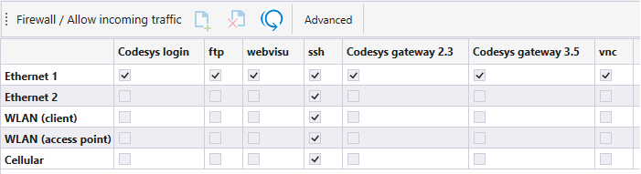
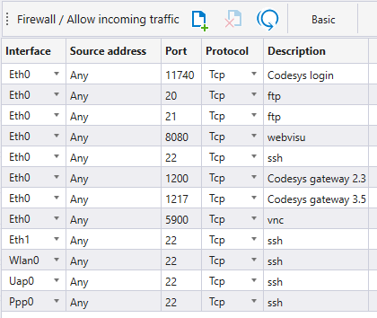

By default, all inbound connections from all network interfaces to the device are allowed. To improve data security, a firewall must be setup. This can be done by creating a file called firewall.sh to the /opt/user/userapp/etc directory. The Data Security tab in MultiTool Creator provides an easy way to setup the file.
In the Basic tab, connections to specified applications/protocols can be allowed. All connections that have not been selected are denied. Check the boxes to allow inbound connections. If an unlisted protocol is needed, use the Advanced tab.
Firewall settings can be reset with Reset to Default icon.

|
Protocol |
Description |
Default port(s) |
|
CODESYS login |
Enables CODESYS login to the device via selected interface. |
11740 (TCP), 1740 (UDP) |
|
File Transfer Protocol (FTP) |
Enables FTP transfer to device via selected interface. |
20 (data transfer), 21 (control) |
|
Secure Shell (SSH) /Secure File Transfer Protocol (SFTP) |
Enables SSH/SFTP login to device via selected interface. |
22 |
|
Web Visualization |
Enables web visualization of device via selected interface. |
8080 |
|
CODESYS 2.3 gateway |
Enables CODESYS login to CODESYS 2.3 control units in network via selected interface. |
1200 |
|
CODESYS 3.5 gateway |
Enables CODESYS login to CODESYS 3.5 control units in network via selected interface. |
1217 |
|
Virtual Network Computing (VNC) |
Enables VNC connection of device via selected interface. |
5900 |
In the Advanced tab, any connection can be allowed. The source address, port and protocol of the allowed inbound connection must be specified.
Allowed inbound connections can be added with the icon and removed with the
icon and removed with the icon.
icon.
Firewall settings can be reset with Reset to Default icon.
If any settings are changed in the Advanced tab, the Basic tab is disabled, unless settings are restored to defaults.

|
Settings |
Description |
| Interface | Network interface from which the connection is allowed Eth0: Ethernet 1 Eth1: Ethernet 2 Wlan0: WLAN client Uap0: WLAN access point Ppp0: Cellular |
| Source address | IP address from which the connection is allowed |
| Port | Inbound port from which the connection is allowed |
| Protocol | Allowed protocol (TCP, UDP, or Both) |
| Description | Text field can be freely used |
Epec Oy reserves all rights for improvements without prior notice.
Source file topic200205.htm
Last updated 25-Jun-2025